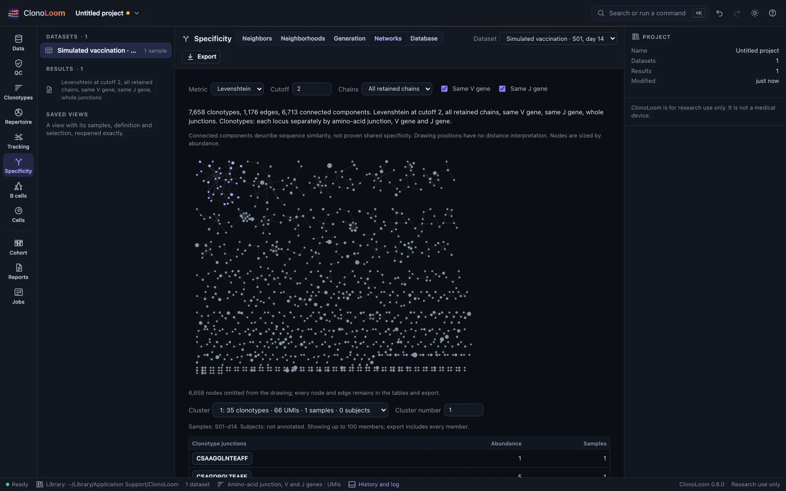
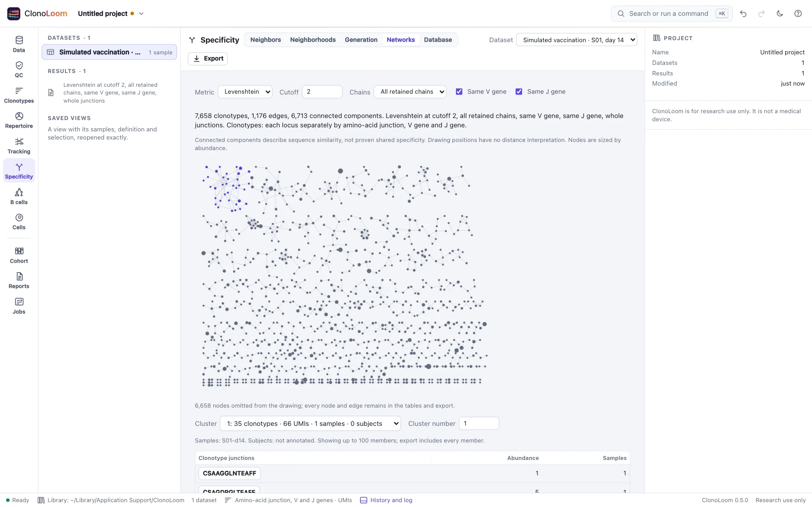

Clonotype networks
Specificity’s Networks part joins clonotypes within a sequence-distance cutoff and finds their connected components. The definition, metric, cutoff and chain rules travel with the result.
Choose the distance and chains


Identity requires identical whole junctions. Hamming counts substitutions between junctions of equal length; Levenshtein also counts insertions and deletions, each of cost one. Their cutoff is 0–2. Both include the junction’s conserved anchors. TCRdist compares trimmed, weighted CDR3s, optionally including the V genes’ loops from Reference data, at a cutoff of 0–1000. Definitions without resolved V genes use CDR3s alone.
All retained chains requires a matching partner for every chain at the same locus, with missing matching missing only. The distance is the smallest possible maximum among these pairings. Any shared chain requires one matching chain at the same locus and uses the minimum distance. Extra chains retained by the definition are not discarded. IGK and IGL remain different loci. Optional same-V and same-J rules compare nonempty calls at the definition’s gene or allele resolution.
Read the components
Clusters are connected components, largest first. A path can connect two receptors farther apart than the cutoff: components describe sequence similarity, not proven shared antigen specificity. Each component reports its clonotypes, total abundance in the dataset’s unit, distinct samples and annotated subjects. Unannotated samples do not invent subjects.
Choose a cluster to highlight it, or click a drawn node. Its first 100 clonotypes are listed below; choose a junction to open that clonotype in the Clonotypes view. The drawing sizes nodes by abundance. Positions have no scientific distance interpretation.
A drawing of the complete result
The default drawing shows up to 1,000 nodes, with omitted nodes counted. The drawing limit never changes the full graph, connected components or exports. For TCRdist, non-T-cell clonotypes and receptors without required V loops remain isolated nodes and are counted explicitly.
Very dense graphs can exceed the sequence index, candidate or edge budget. The analysis then fails with an explanation; it does not keep a graph with silently missing edges. Reduce the dataset or cutoff before trying again.
Export and reproduce
Export writes every clonotype’s component in clusters.csv and every edge with its distance in edges.csv, with a NOTICE naming the data’s source, definition and method. The result records all effective options and the checksum of V-gene loops when used. Remote control offers find_networks; the Reports methods paragraph describes the analysis and cites its methods.
Independent checks
All 420 cell partitions agree with scirpy 0.25.1 across eight 10x runs and three OTS units, under matched definitions, gene resolution and TCRdist gap cost. The deterministic layout has identical bytes on arm64 and amd64. In the simulated vaccination day-14 sample, TCRdist at 48 connects all 34 observed families, while two edits connect 29: a low cutoff can split a family when an intermediate is not observed. These checks establish implementation agreement and known-truth recovery at stated thresholds, not biological specificity.